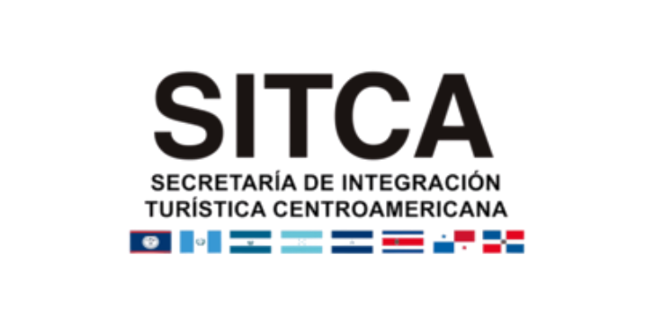

Descripción del proyecto
Se desarrolló una investigación de mercado orientada a relevar expectativas de consumo turístico, decisiones de viaje y tendencias en los países de Centroamérica en el contexto pospandemia de COVID-19. El estudio generó información estratégica para el diseño de planes de acción, contribuyendo a mitigar los efectos de la crisis y a acelerar la recuperación de la actividad turística y económica en la región.
← Volver al portfolio